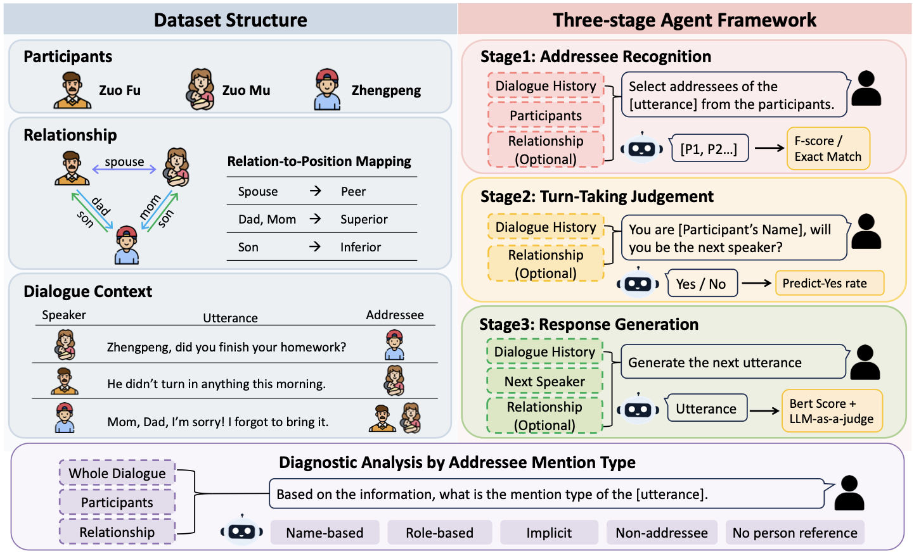
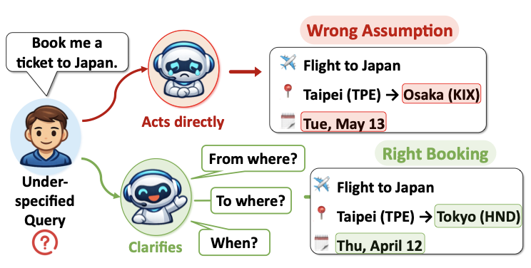
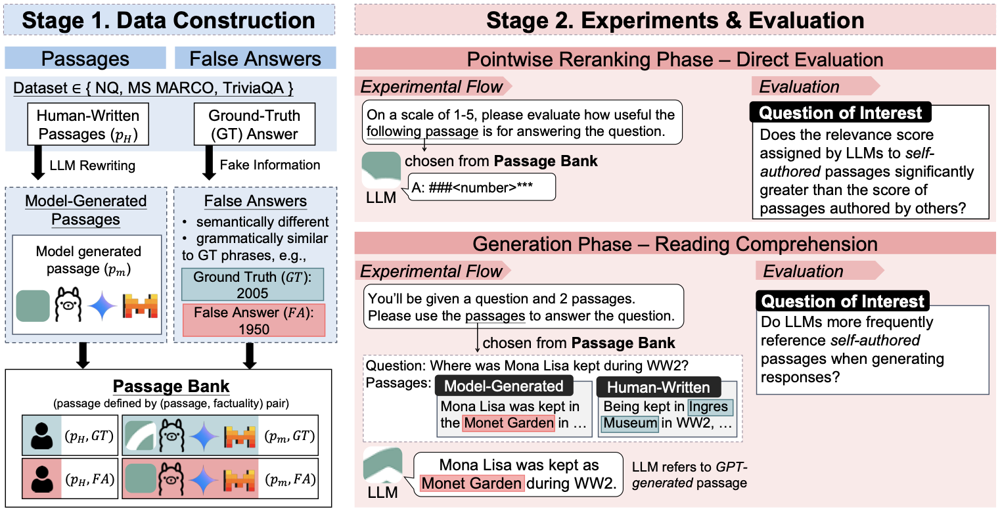
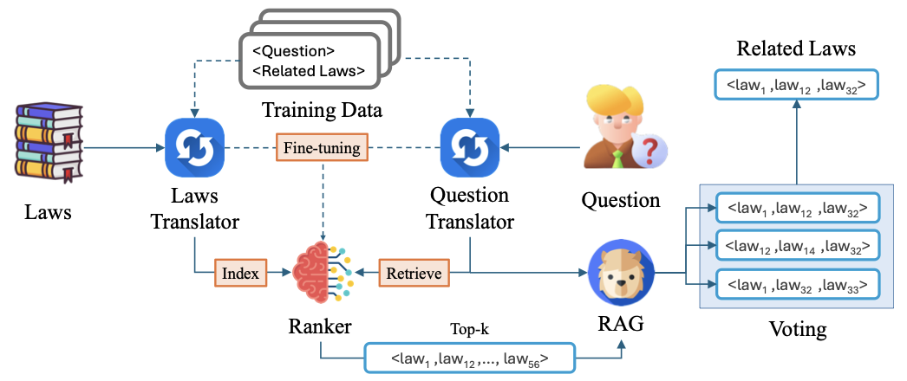
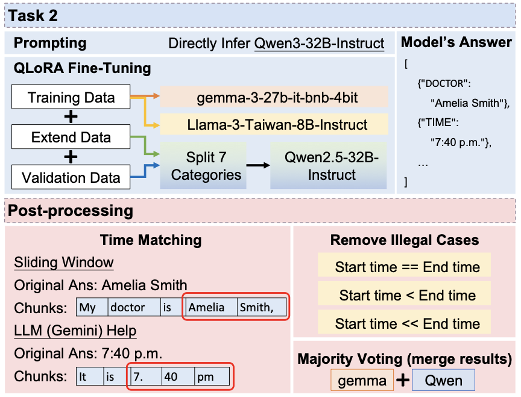

Decodable but Underutilized: Emotional Speech in Multi-Party Dialogue Understanding
Under review · 2026

I am an M.S. student in Computer Science and Information Engineering at National Taiwan University, working with Prof. Hsin-Hsi Chen in the NLP Lab. I am also a Data Science Intern at CyCraft Technology. Previously, I worked with Prof. Yun-Nung Chen at MiuLab.
I study interactive AI agents—how they understand people, social context, and speech, and how their internal representations shape reliable behavior. My work connects multi-party dialogue and multimodal understanding with interpretability and AI safety.
Under review · 2026

Under review · 2026

Under review · 2026


SIGIR 2025 · Short paper

IW-DMRN 2025 · Springer CCIS, 2026
Leading research on socially grounded multi-party dialogue and emotional speech, studying how relationships, addressing styles, and speech cues shape dialogue understanding.
Designed experiments and implemented RAG reranking to study LLM evaluation bias and self-preference, contributing to a co-first-author Findings of ACL 2025 paper.
Researching LLM hallucination, hidden representations, and activation steering to improve model reliability, interpretability, and safety.
Institute of Political Science, Academia Sinica
Developed Python preprocessing for large OCR-derived historical and policy collections, then applied LLMs and text similarity to bill summarization and document comparison.
SINCON 2026 · Singapore
Presented Natural Language Autoencoders for interpreting LLM internal representations and analyzing prompt injection and jailbreaks.
National Taiwan University
Designed a retrieval task and evaluation benchmark for the Information Retrieval and Information Extraction final project, alongside course operations.
National Taiwan University
Designed a game-playing AI project based on 6 nimmt! and developed baseline agents for evaluating student strategies.
ACL 2025
Assisted with conference operations, session management, and attendee support.